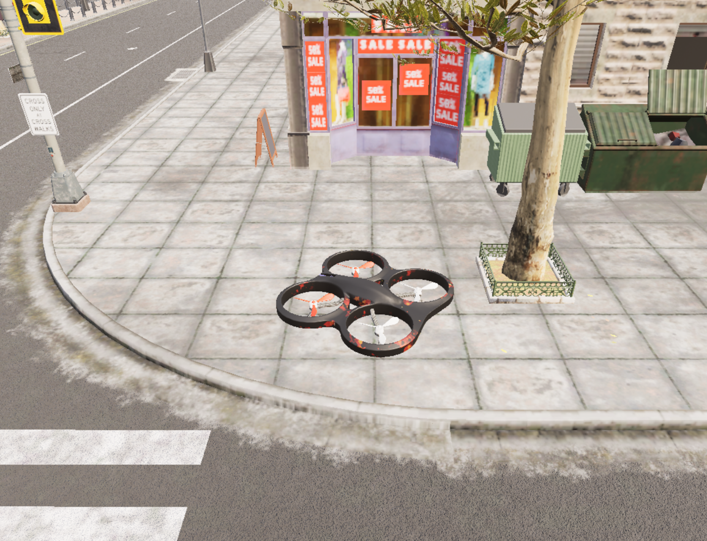
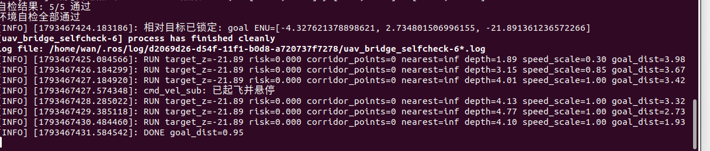

无人机激光雷达三维安全走廊与自适应高度避障
本实验在 OpenHUTB/CarlaAir 的 Town10HD 场景中，使用无人机机载激光雷达点云 选择安全飞行高度，并用前视深度图补充近距离玻璃/墙面保护，通过 ROS Noetic 桥接完成速度闭环。
源码位置：src/air/uav_lidar_safety_corridor/
1. 实验目标
- 订阅 OpenHUTB 桥接发布的无人机位姿和激光雷达点云；
- 在目标方向前方建立三维安全走廊；
- 根据障碍密度选择安全高度，而不是始终使用固定高度；
- 用
/camera/depth做近距离减速和停车保护； - 对水平速度、垂向速度和加速度做限幅；
- 对比固定高度和自适应高度策略的到达效果与最小障碍间距。
2. 系统结构
OpenHUTB / AirSim
│ 位姿、LiDAR
▼
carlair_ros_bridge
│ /uav/odom
│ /lidar/points
▼
uav_lidar_safety_corridor
│ /uav/cmd_vel
▼
carlair_ros_bridge ──► 无人机
桥接层输出世界 ENU 坐标，因此本节点也输出世界 ENU 速度。启动桥接时必须使用
body_frame:=false，否则速度会被按机体系解释。
本模块只支持前向安全走廊。目标方向相对机头超过 75° 时节点会拒绝目标并
悬停，避免侧移进入前视深度相机不可见的障碍。
3. 安全走廊
对每个候选高度 ，在前视距离 、横向宽度 的走廊内统计 垂直安全带 的点云。
候选高度评分同时考虑：
- 走廊内障碍密度；
- 与目标高度的偏差；
- 与当前高度的变化量。
障碍密度较低、接近目标高度且高度变化平滑的候选点会被选中。
4. 控制流程
- 从
/uav/odom读取世界位姿和速度； - 从
/lidar/points解析 XYZ float32 点云； - 选择安全高度；
- 根据目标方向和短距离斥力生成水平速度；
- 根据安全高度生成垂向速度；
- 用前视深度图中心区域限制最大水平速度；
- 按加速度和速度上限输出
/uav/cmd_vel。
深度保护只覆盖机头前方中心区域；侧向和后向目标不在本实验的安全保证范围内。
5. 运行
先在 Windows 启动 OpenHUTB/CarlaAir，再在虚拟机启动桥接：
roslaunch carlair_ros_bridge main.launch \
body_frame:=false \
publish_image:=true
深度保护依赖桥接发布的 /camera/depth，因此这里必须开启图像。若关闭图像，
应同时禁用深度保护，并明确该次运行不能复现深度减速结果。
确认 /uav/odom 和 /lidar/points 正常后启动实验：
roslaunch uav_lidar_safety_corridor main.launch \
goal_x:=10.0 \
goal_y:=0.0 \
goal_z:=5.0
目标点必须根据当前场景自动机位置和障碍布局调整。
6. 观察与诊断
rostopic hz /uav/odom
rostopic hz /lidar/points
rostopic echo /uav_lidar_safety_corridor/status
rostopic hz /uav/cmd_vel
RViz 中添加 MarkerArray 话题
/uav_lidar_safety_corridor/markers，可观察当前选中的安全高度和预览方向。
7. OpenHUTB 实测结果
测试环境：
| 项目 | 配置 |
|---|---|
| 模拟器 | OpenHUTB / CarlaAir，Town10HD Opt |
| 虚拟机 | Ubuntu 20.04.6 |
| ROS | Noetic 1.17.4 |
| 飞控接口 | AirSim Drone1，VMware VMnet8 <宿主机IP>:41451 |
| 感知 | 16 线 lidar1 + 640×480 front_depth |
桥接自检 5/5 通过；单帧雷达约 2300 个点。最终验收飞行使用相对目标
[-2.54, 1.60, 3.00] m，即上升 3 m 并沿机头方向前飞约 3 m。
| 指标 | 结果 |
|---|---|
| 初始目标距离 | 3.98 m |
| 最终目标距离 | 0.95 m |
| 最终状态 | DONE |
| 高度变化 | 约 +3.0 m |
| 深度保护启动 | 1.89 m 时速度倍率 0.30 |
| 安全距离恢复 | 3.15 m 时速度倍率 0.85，4.01 m 时恢复 1.00 |
| 前向雷达走廊 | 本次路径为空，corridor_points=0、risk=0 |
| 离线测试 | 20 tests，0 failures |
| 碰撞 | 无 |


本次最终路径的前向雷达走廊为空，因此高度变化由目标高度触发；障碍点云驱动的 候选高度切换由离线测试覆盖，没有把开放路径实测写成“障碍触发升降”。
8. 已知边界
- 仅支持偏离机头不超过 75° 的前向目标；
- 前视深度相机不能覆盖侧向和后向；
- 透明玻璃、细杆等对象可能出现激光点稀疏；
- 本实验验证速度闭环，不包含真实旋翼姿态动力学。
9. AI 使用声明
使用 Codex 辅助需求分析、代码编写、测试和文档整理；作者完成 OpenHUTB 环境配置、实际飞行、数据采集与结果复核，并对提交内容负责。